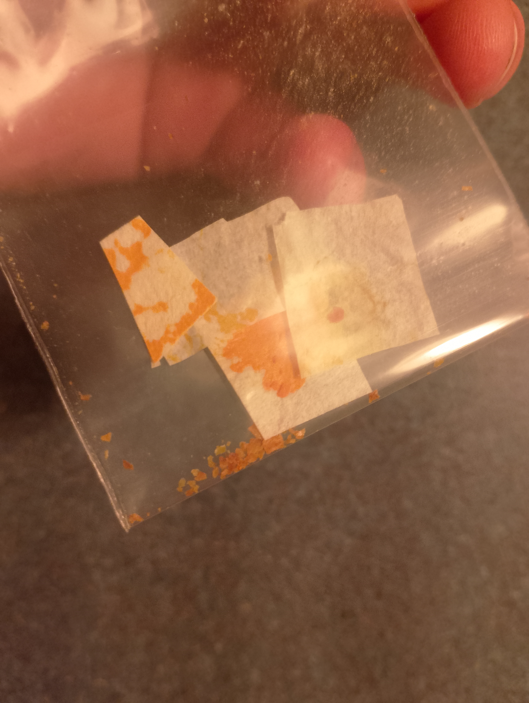
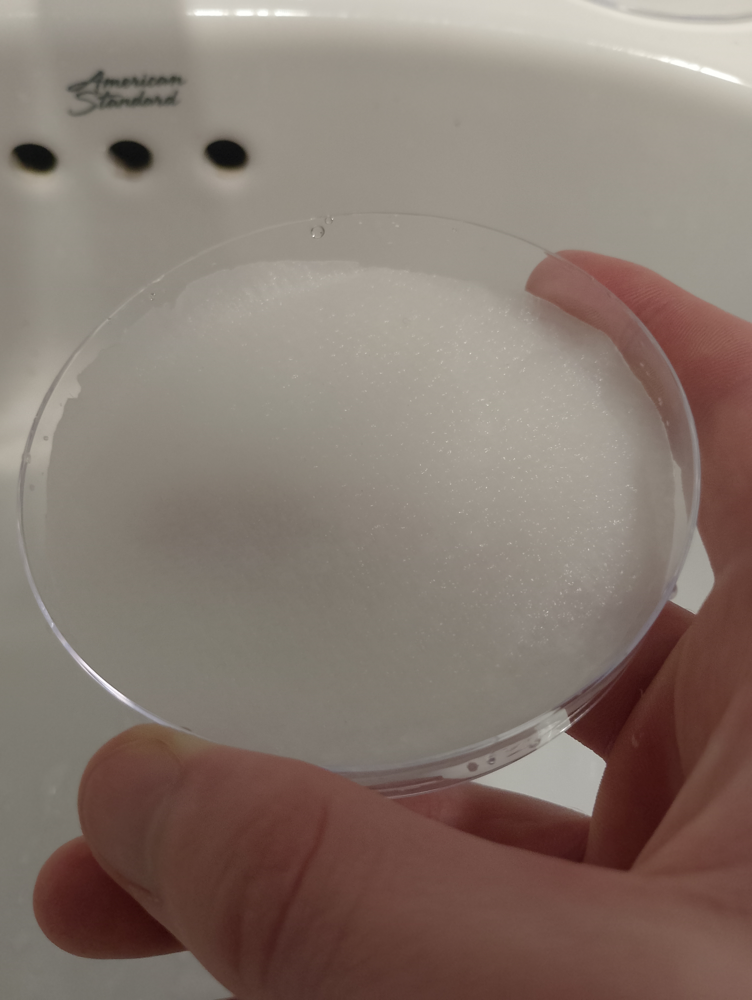
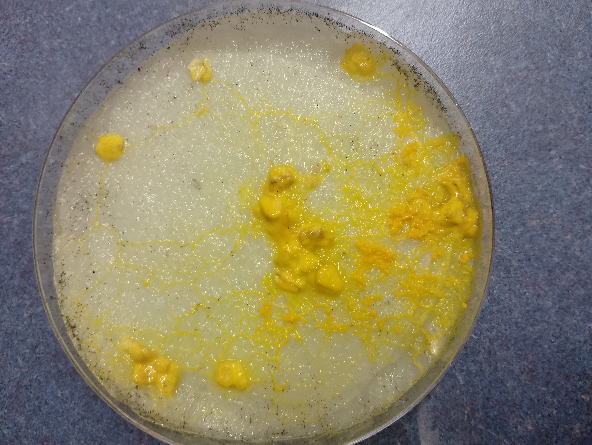

Growing Slime Mould
I'm growing a slime mould (Physarum Polycephalum) to replicate simple versions of the experiments performed by Andrew Adamatzky in unconventional computing. As far as I'm aware, slime moulds are rather difficult to kill, which makes them a perfect introduction to working with biological organisms.
I received my slime mould in a small packet. It arrived in a dry state, attached to a few pieces of paper, and many small specs left at the bottom of the bag.

The slime mould needs a consistently moist environment to grow. I prepared my petri dish by cutting three circles out of paper towel, and ran the water in the petri dish. After the paper got wet, I poured the water out and left the paper towel in the petri dish. I add a little more water every few days to keep the base wet.
This is not a sterile approach, but the slime mould is rather resilient and can grow even with some other organisms in its dish.

I placed a small pile of oats in the middle of the dish, and dotted a few more around the sides. After a week of growth, the slime mould looks like this:

There are also black specs that are growing out of the paper towel. I imagine this is some kind of mold. I plan to get Agar in the near future and use that as the base for my future slime mould dishes. I'd like to first replicate the slime mould's maze solving abilities, and then explore some of its electrophysiological activity.